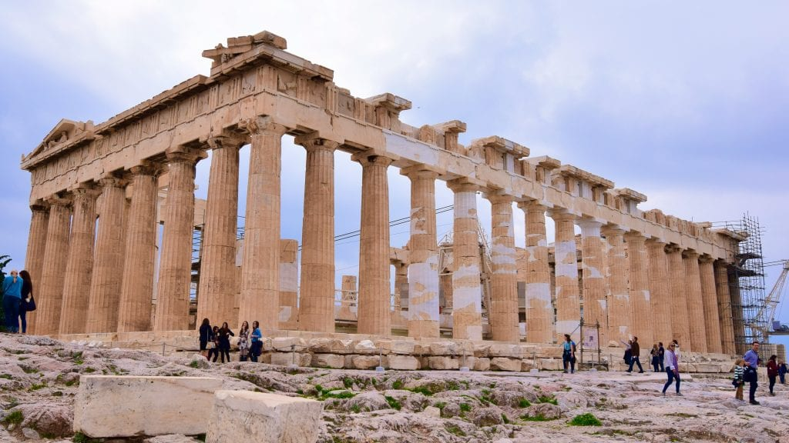
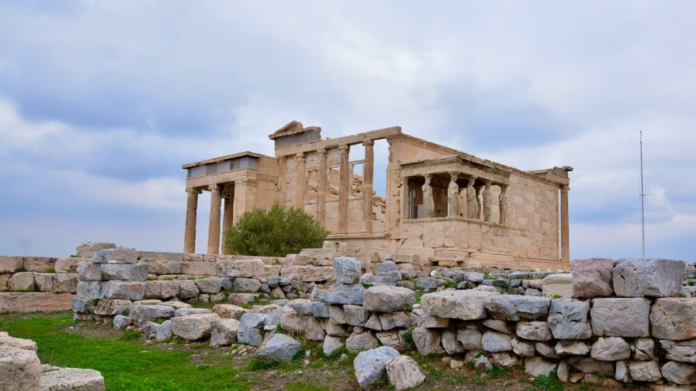
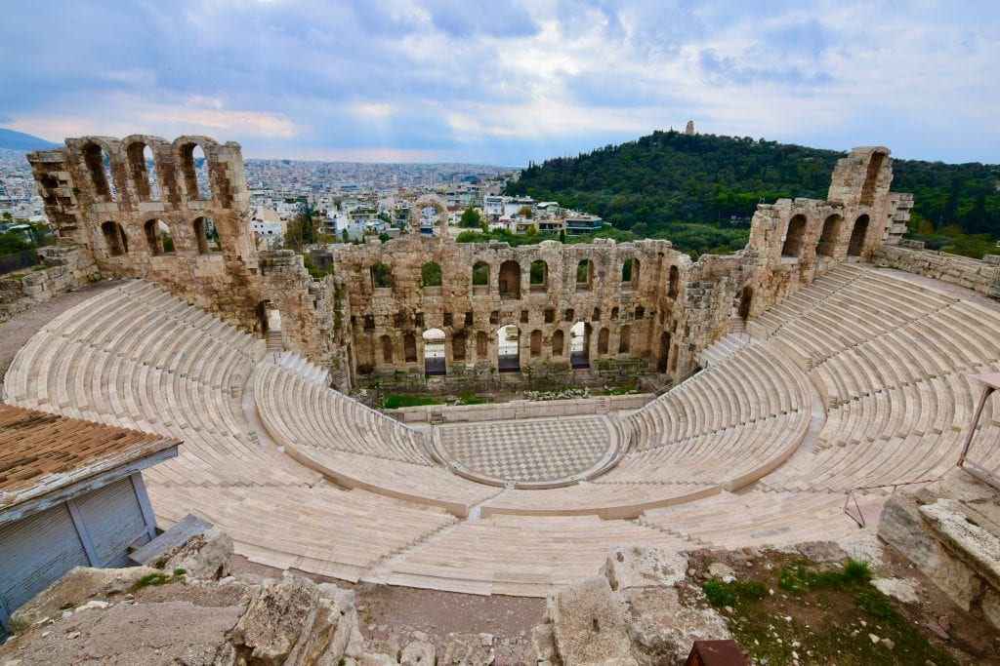

One Day in Athens
The land of philosophers like Aristotle, Socrates, Plato, king like Alexander the great, poet like Homer, scientist like Archimedes or the musician like Yanni – Greece is one of the best countries this universe ever have! If you want to visit only one country of the world to get a sense of history, Greece should be on top of your list. This travel blog will guide you through the best of Athens, the capital of Greece, the mighty empire from the past.
Only One day in Athens! You gotta be kidding me! That’s what everyone told me when I shared my one-day itinerary in Athens with my friends. Their amusement is quite natural, and I was not surprised by their reactions. Athens can be viewed as one of the most historic cities in the world along with Rome. It’s true that some of the other countries like Egypt are also rich in history and can compete with Greece. Truth be told, all of these great places made our world fascinating. Once upon a time, Athens was the most important place in the most powerful civilisation of mankind. So it’s not ideal to explore this historic town in a day. However, if you do not have much time in your hand, you still can explore Athens in a day.
The Acropolis – Top pick for One day in Athens Trip
If you want to visit only one place in Athens, the Acropolis should be that definitive place without any doubt at all! You will find some of the most famous ruins of the world in the Acropolis. Sitting there, you can go back to thousands of years ago and imagine how civilizations of the world were taking a shape from the same very place you are just in! The Acropolis is a symbol of the world, the Acropolis is a symbol of civilization. The Acropolis is a UNESCO World Heritage Site.
Parthenon

The Parthenon temple is dedicated for the Goddess Athena.
Athena the Virgin – was the name of the Greek Goddess during the mid-5th century. Parthenon was a temple on top of a hill dedicated to Athena and presumed to house the statues of Athena. When you will visit Parthenon, you will observe an almost destroyed ancient ruin. They are trying to renovate it. One important aspect of the Parthenon is, it’s open, I believe, the ancient Greeks did not have permission to go inside of the temple and they used to see the Goddess from outside.
Erechtheion

Erechtheion resembles the power and glory of ancient Greece.
Only a short distance from the Parthenon, and located to the Northside of the Acropolis, The Erechtheion(aka Erechtheum), is another temple in the complex. This temple is about 2500 years old and named after a legendary king Erichthonius. If you read the Iliad of Homer, you will find his name. You will find some beautiful angels standing and looking outside in the outer part of the temple.
The Odeon of Herodes Atticus

A 2200 years old Roman amphitheatre at the slope of Acropolis
Having seen two ancient temples, it’s time to lay your eyes to this lovely stone-made Roman theatre in the same compound of Acropolis. This theatre was built more than 2200 years back by Herodes Atticus. This half-moon-shaped amphitheater was renovated in 1950 and since then many famous artists performed in this theatre. To name a few are Frank Sinatra, Yanni, Sting, and Yann Tiersen.
N.B. I am learning web development. Only for educational purpose, I tried to replicate this page.